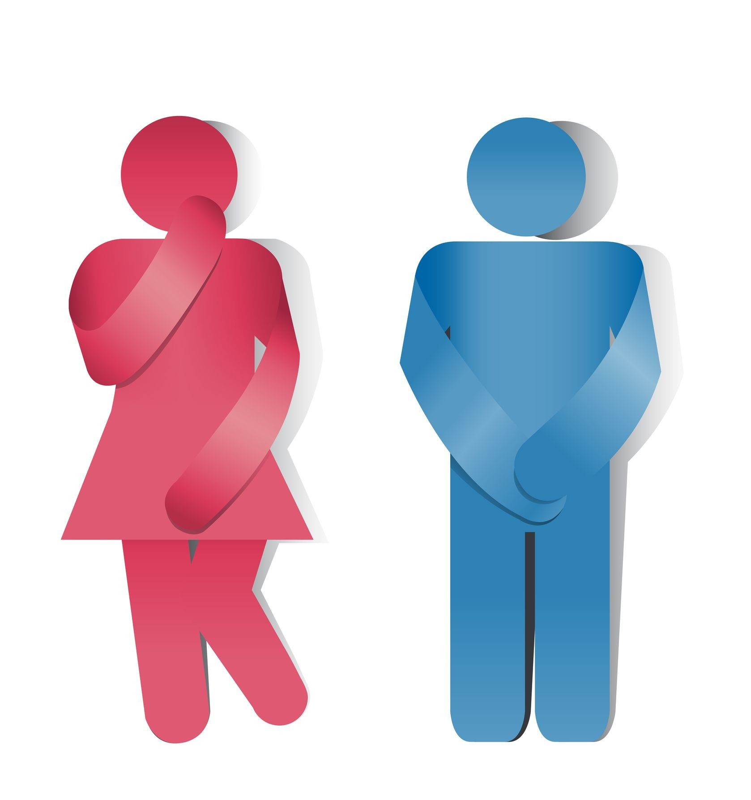

A incontinência urinária (IU) é um problema de saúde comum, mas que ainda é cercado por muitos mitos e tabus. Muitas pessoas acreditam que é uma condição normal do envelhecimento ou após o parto, o que leva à falta de tratamento e à queda na qualidade de vida.
O sistema urinário e sua relação com a incontinência
Como fisioterapeuta pélvica, meu objetivo é desmistificar a IU e mostrar que existe tratamento eficaz.
Realidade: Embora a prevalência de IU aumente com a idade, ela não é uma consequência inevitável do envelhecimento. É um sintoma de que algo não está funcionando corretamente no assoalho pélvico.
A IU é um problema de saúde que pode e deve ser tratado. Aceitá-la como "normal" impede que as pessoas busquem ajuda e recuperem o controle de suas vidas.
Realidade: A incontinência urinária é mais comum em mulheres, especialmente após a gravidez e a menopausa, mas também afeta homens.

A incontinência urinária afeta ambos os gêneros
Nos homens, a IU está frequentemente associada a:
O tratamento, incluindo a fisioterapia pélvica, é adaptado para as necessidades específicas de cada sexo.
Realidade: Reduzir a ingestão de líquidos pode, na verdade, piorar a incontinência. A urina fica mais concentrada, o que pode irritar a bexiga e aumentar a frequência e a urgência urinária.
A hidratação adequada é essencial para a saúde da bexiga e do trato urinário. O ideal é gerenciar a ingestão de líquidos de forma estratégica, mas nunca restringir a ponto de desidratar.
Realidade: Exercícios abdominais tradicionais, como os crunches, podem aumentar a pressão intra-abdominal, o que, em um assoalho pélvico já enfraquecido, pode agravar a incontinência.
O fortalecimento do assoalho pélvico requer exercícios específicos, como os Exercícios de Kegel, que devem ser realizados com a técnica correta e, idealmente, sob a orientação de um fisioterapeuta pélvico.
Realidade: A cirurgia é uma opção para alguns casos graves, mas a fisioterapia pélvica é o tratamento de primeira linha e, muitas vezes, o único necessário para a maioria dos tipos de incontinência urinária.
A fisioterapia trabalha para:
Em muitos casos, a fisioterapia resolve ou melhora significativamente os sintomas, evitando a necessidade de procedimentos invasivos.
Se você sofre com incontinência urinária, saiba que você não está sozinha e que existe tratamento. Agende uma consulta para uma avaliação personalizada e comece sua jornada para uma vida com mais segurança e bem-estar.